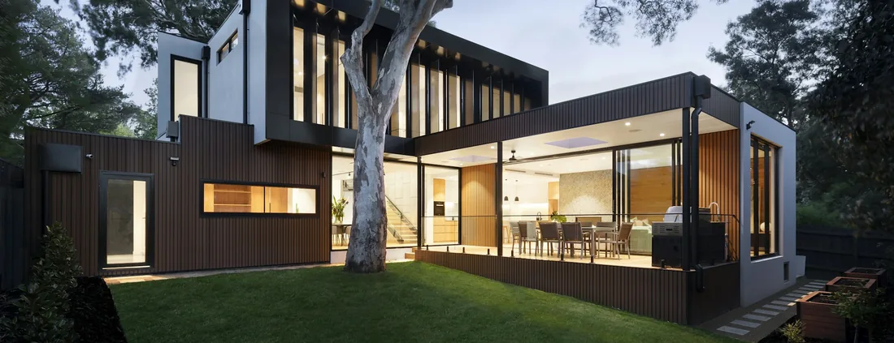
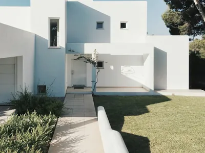

About
One contractor, accountable for the whole yard
Licensed in Florida under CBC1269393, working Broward, Miami-Dade and Palm Beach from a base in Davie.
About Arco Outdoors
Arco Outdoors is a licensed South Florida contractor that builds outdoor space — the ground you walk on, the structures that shade it, the boundary around it and the openings that connect it to the house. We work across Broward, Miami-Dade and Palm Beach counties from a business address in Davie.
The thing that actually distinguishes an outdoor contractor is narrower than most websites suggest, so here it is plainly: we are a single accountable party for work that is usually split across three or four. A yard rebuilt properly involves excavation, drainage, hardscape, sometimes footings and services, sometimes a boundary and an opening. Split across separate trades, each one arrives with its own schedule, its own idea of the finished level, and no responsibility for what the previous one buried.
Run as one contract, the ground opens once. The levels are decided before anything is laid. Anything that has to go under a surface goes in while the trench is still open. Nobody cuts back into work you have already paid for.
That is the whole argument, and the rest of this page is how it is carried out.
What we build
Eleven build types, one point of accountability
Single scopes are normal work — plenty of projects are one driveway or one fence line. The reason these sit together is that several of them share a base, a levels plan or a drainage route.
The approach
Complete outdoor transformation, and what it actually buys you
Not a bigger invoice. A different sequence — and the difference shows up in the parts of a yard nobody photographs.
The ground opens once
Excavation is the disruptive, expensive part. Doing it once for every element that needs it, rather than each time a new trade arrives, is where a coordinated project earns most of its margin back.
Nothing is cut back into
Footings for a structure and the electrical, gas or water feeding a cooking area are located and roughed in before paving is laid. Reaching them afterwards means lifting the surface you just paid for.
Drainage is designed, not inherited
Falls are built into the base across the whole yard, running away from the house and towards somewhere that can actually take the water. Piecemeal work tends to solve one puddle by creating another.
The materials agree
Paving, coping, turf edge and boundary are specified against each other rather than chosen three months apart. Junctions between them are the details that make a yard look built rather than assembled.
One schedule, one accountable party
When a delivery slips or a survey reveals something unexpected, there is one person to call and no argument about whose scope it was.
Where it does not apply
If you want one driveway replaced, take the driveway. Phasing across years is a legitimate plan too — the useful version is agreeing the levels and drainage for the whole yard once, then building it in stages against that.
How we approach projects
Five stages, and what each one is really deciding
Most of the decisions that determine whether you like the result are taken in the first two stages, before anything is bought.
-
Planning
An on-site visit, because nothing that matters can be read off a satellite image: how the ground falls, where water goes after a storm, what the existing surfaces are doing, how the house opens onto the yard, and where machinery and materials can physically get in. Constraints get raised here rather than later — permitting, associations, easements, trees, and anything already buried. Requirements can vary by jurisdiction and project scope, and we confirm what applies to your address rather than assuming it.
-
Design considerations
Use before appearance. Where people will stand, sit, cook and walk; which hours of shade you actually want back; what is being screened and what is being framed. Then the technical layer: finished levels against the threshold, falls, and where the paving stops and planting or turf begins. Material follows from that — a pool surround is judged on how it behaves wet and how hot it gets underfoot before anyone opens a colour chart.
-
Preparation
Clearing, excavation, and inspecting the sub-grade rather than assuming it. Base built and compacted in layers, not one pass. Drainage routes cut, footings poured, and services roughed in while the ground is open. This stage is invisible in every photograph and is where most of the durability is decided — and where the difference between two quotes usually lives.
-
Construction
Surfaces laid to the agreed levels with edge restraint that will hold them, structures erected on the footings set for them, boundaries set to the line walked with you. Setting out is done deliberately so that cuts land where they are least visible. Sequencing keeps traffic off finished work.
-
Finishing
Jointing, clean-down, and the junctions where one material meets another — the details that decide whether a yard reads as finished. Then a walkthrough on site: what was built, what to expect in the first months, what maintenance the surfaces actually need, and any paperwork worth keeping.
Licence and coverage
Two facts you can check before you call
Licence CBC1269393
Our Florida contractor licence number. It is searchable through the state's Department of Business and Professional Regulation, which will confirm the number, its current status and who holds it. Check it — it takes about a minute, and a contractor who is reluctant to give you the number has told you something.
Insurance
Ask for the certificate and request it from the insurer or agent rather than as a forwarded image. Confirm the dates cover your project and that the coverage matches the work being done. We do not publish carrier names or policy numbers on a public page.
South Florida — three counties
Broward, Miami-Dade and Palm Beach, worked from an address in Davie. That is the whole geographic claim. You will not find forty municipality names stacked at the bottom of this page, because a long list of cities is cheap to type and tells you nothing.
What we do not claim
No years in business, no project count, no crew size, no awards, no founding date and no staff biographies appear anywhere on this website. We hold no record that supports them, and a figure nobody can check is not a credential.
The markets we are asked for most
Seeing the work
What we can show you, and what we will not pretend
The honest version, because you will find it on the Gallery and Projects pages anyway.
The photography on this website is reference imagery. It shows the kind of space each page describes. It is not presented as a finished Arco job at a named address, no image carries a city, and every caption says what is actually in the frame. That is a smaller claim than most contractor sites make and it is deliberate.
There are likewise no case studies here. A case study is a factual claim about a specific property, and we publish none we cannot attribute — no city, date, duration, cost or homeowner appears anywhere on this site for any individual job.
What we can do is better than a photograph. Ask, and depending on what is running at the time we can arrange references you can telephone, a job in progress you can walk, or a completed property whose owner is happy to have visitors. An open excavation tells you more about a contractor in five minutes than a gallery does in an hour.

Contact
How to reach us
One point of contact for a project, rather than a different number for each trade.
Telephone
305-951-8862
Monday to Friday, 8:00 AM – 6:00 PM
jonah@arcooutdoors.com
Describe the space and what is not working about it.
Business address
2940 SW 81st Way
Davie, FL 33328
Licence
CBC1269393
Verifiable through the Florida DBPR.
Before you enquire
Questions people ask about the company
What does Arco Outdoors actually do?
We build outdoor space. Eleven build types in practice — complete outdoor remodeling, paver installation, patios, driveways, pool decks, outdoor kitchens, pergolas, tiki huts, artificial turf, fencing, and impact windows and doors — under one contract with one point of accountability. Plenty of projects are a single scope. The reason the eleven sit together is that several of them share a base, a levels plan or a drainage route, and deciding that once is cheaper than deciding it three times.
Are you licensed and insured?
Yes. Our contractor licence is CBC1269393, and Florida licences are searchable through the state's Department of Business and Professional Regulation, so you can confirm the number, its status and who holds it in about a minute. Ask for the certificate of insurance and request it from the insurer or agent rather than as a forwarded image — check that the dates cover your project and the coverage matches the work.
Where are you based and how far do you travel?
The business address is 2940 SW 81st Way, Davie, FL 33328, and we work across Broward, Miami-Dade and Palm Beach counties. Distance affects logistics rather than standards: it influences how a schedule is planned and how site visits are grouped, and occasionally whether a small job a long way out is practical on its own. It does not change how the work is built or what the proposal says. The service areas page has the markets we are asked for most.
Why does this website not list years in business or projects completed?
Because we have no record to support those figures, and a number nobody can check is not a credential. The same rule applies across this site to awards, crew sizes, founding dates and staff biographies. It is a smaller claim than the industry norm and it is deliberate — everything asserted here is something you can verify or something we will explain when you ask. The reviews page applies the same line to testimonials.
Who will I actually deal with?
One point of contact for the project rather than a different number for each trade. Enquiries reach us at jonah@arcooutdoors.com or on 305-951-8862 between 8:00 AM and 6:00 PM, Monday to Friday. We do not publish staff biographies on this website, for the same reason we do not publish project counts: we would rather you met the person who is going to run your job than read a paragraph about them.
What happens at the first visit?
We come to the property, because nothing that decides an outdoor project can be established from a satellite image: how the ground falls, where water goes after a storm, what the existing surfaces are doing, how the house opens onto the yard, and where access for machinery and materials is. That visit is also where constraints get raised — permitting, associations, easements, trees — before any of them turns into a surprise.
Start with the yard, not the brochure
Tell us what is not working outside. A designer will visit, measure, and walk you through what actually suits the site — with no obligation.